This plugin does not contain
Databases. This release does not start database.
(Install
Database and start before using it)
You can use one and only one database by workspace. You can use a different database for each workspace.
If you have a project with several Plants or Warehouses and some of them using different databases, you must group them in several workspace.
This plugin will help you to make the configuration of your Compiere MFG + SCM persistence layer which is based on OJB (From Apache group). You don't need to have OJB installed to run the plugin.
This release allow you to create and or modify databases and tables using torque model. This release help you to start from an existing database and make reverse engineering on it. Compiere MFG + SCM actually provide scripts for it's database creation.
Download .zip org.compiere.mfg_scm.eclipse.db_xxx.zip
Unzip it in <eclipse_home>/plugins
Plugin activation for Eclipse 3.0 normally automatically done. Manual action is : select menu 'Window>Customize Perspective>Commands', and check 'Dbf' in 'Available command groups'.
Set Dbf home : Window -> Preferences, select Dbf and set Dbf home to <eclipse_home>/<My_Workspace>/<Mf_DbfProjectName>
Other preferences default values should be good.
Create a Dbf project for each workspace in which you want to use the Dbf Plugin.
File->New->Project->Java->Dbf then Next
Give a name for your project then Finish.
It will crate you a project which will appear in the Package Explorer (Left of Java Perspective)
Select it (click on it in Package Explorer) then right click
You get a menu select in it
Properties->Dbf
General page
Main information to put here is the dtd url for torque you will want to use
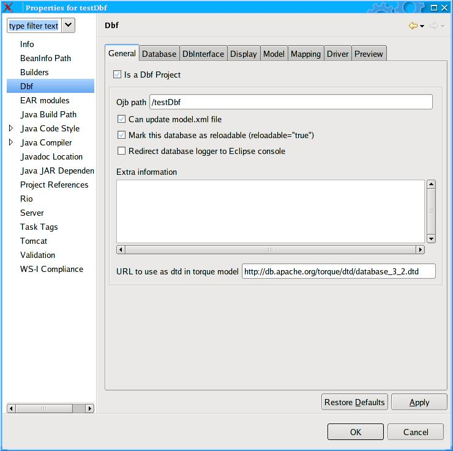
Database property page, you must fill it, selecting your database in the defaults for platform it will fill all fields with default value. Below a screen shot for postgres
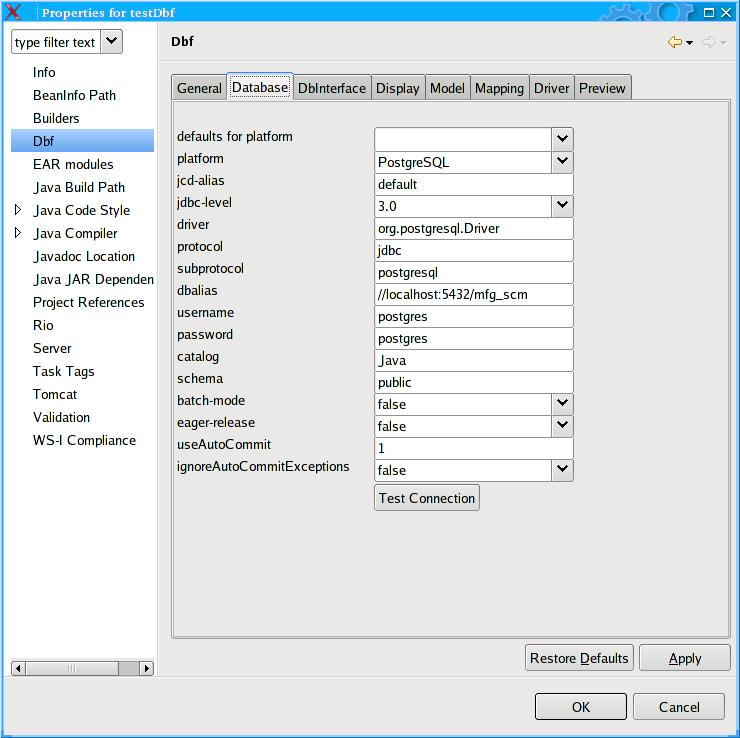
Then the DbInterface Page you normally have to complete only the package field cf screen shot.
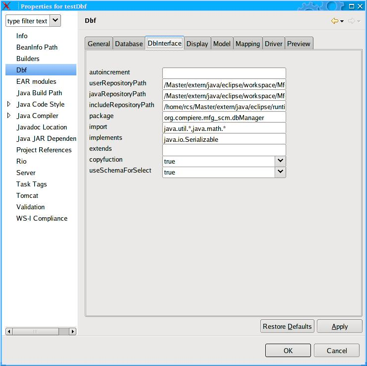
Then normally nothing for the mapping. Default values should be good.
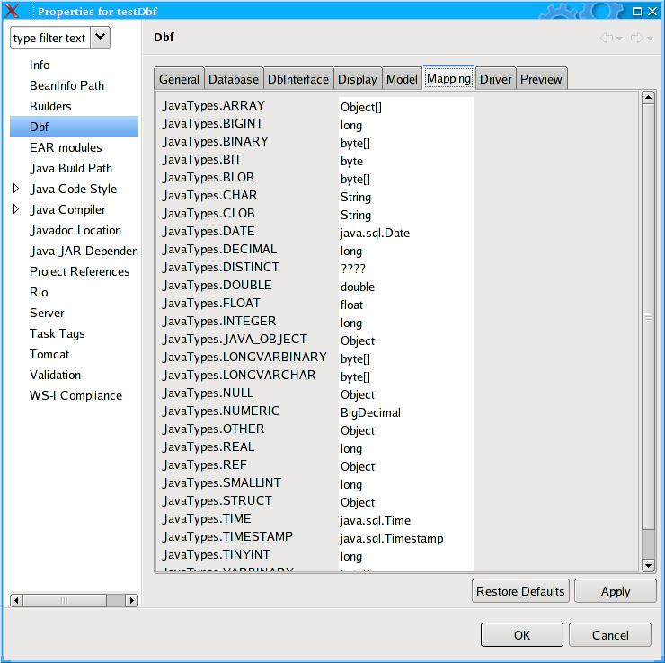
Model property page enable to enter repository pat where will be stored your torque model.
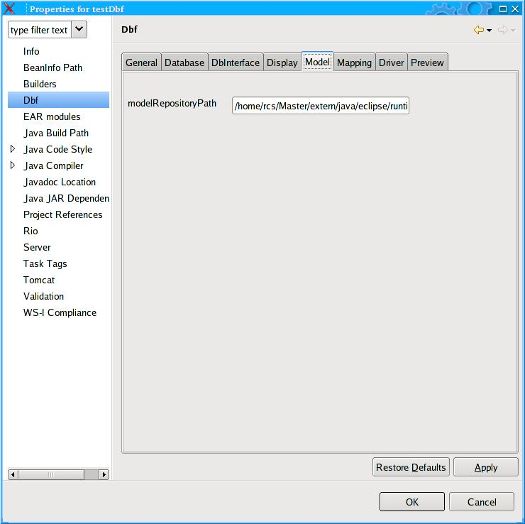
Then add the path for your JDBC driver. You can find drivers for some database in the lib directory of the plugin. cf the screen shot.
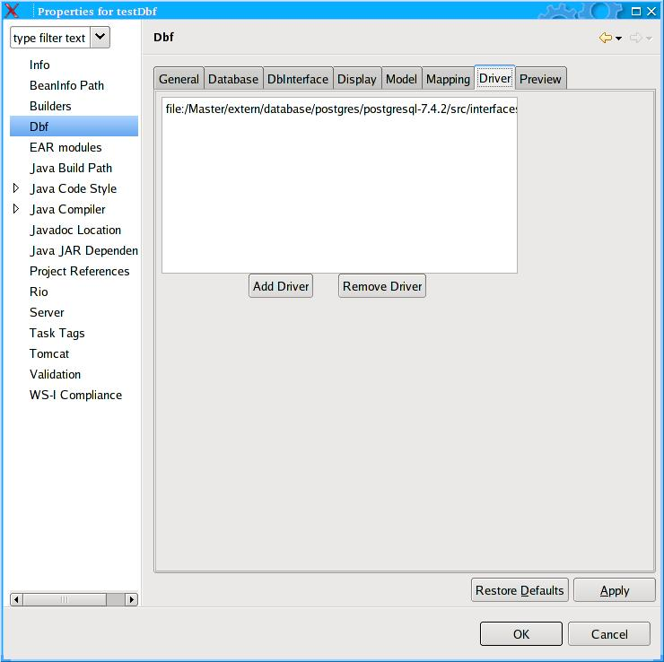
When all properties have been filled then you can get preview of elements which will be used to create repository.xml files used by OJB.
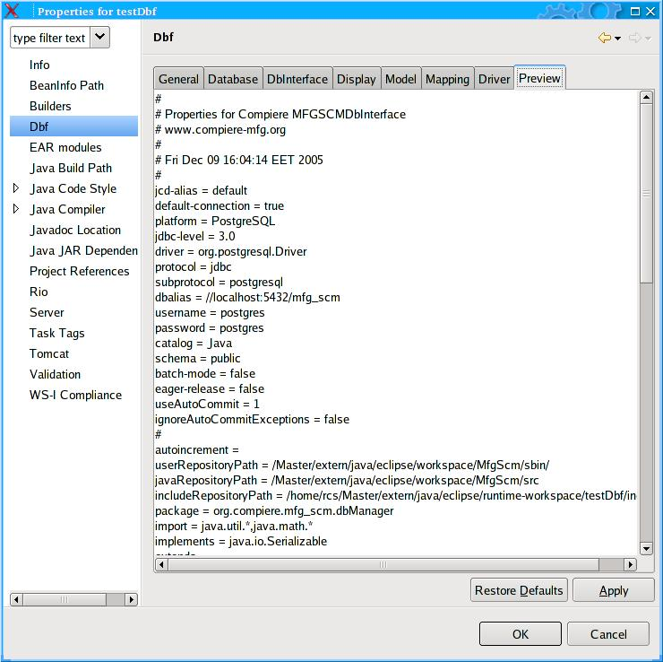
This plugin launches your Dbf
using the default JRE checked in Eclipe preferences window.
To
set a JDK as default JRE for Eclipse open the preference window :
Window -> Preferences -> Java -> Installed JREs.
This
JRE must be a JDK.
We recommend that you use JDK 1.4 and
more as they supports hot code replacement feature.
The plugin sets itself Dbf classpath and bootclasspath. Use Preferences -> Dbf ->JVM Settings, only if you need specific settings.
To access to your database you must open the Dbf Tree View :
Window->Show View->Other->Dbf->Dbf Db Tree
The first time, it can be long, because it open the database and proceed at the reverse engineering of all tables.
Attention : this release does nor manage database re-connection (some bug..). If you access to your database with wrong properties or before having started your database you will need to restart eclipse to have a successful connection....
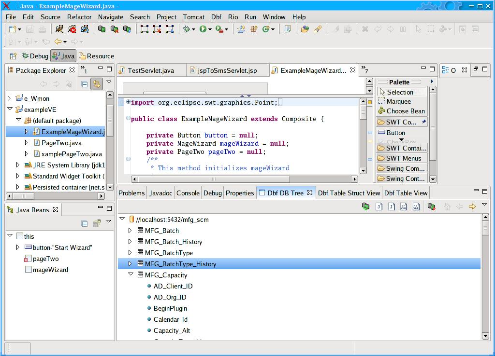
You can use F2 key to rename tables or fields
you have access to some button on the right top of the view :
One for reload, one for generate java data object files, one for java Display files (alpha stage) one to generate OJB xml files, one to generate torque model. (you can use it to create or update structure of your database)
Then some to navigate
If you double click on a table you open the Db Table view with the content of the corresponding table.
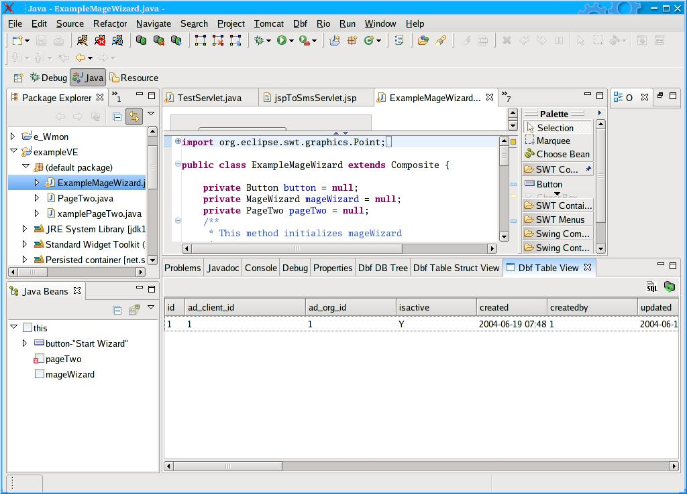
If you press F1 you switch to the table structure view
From this view you can changes properties of fields
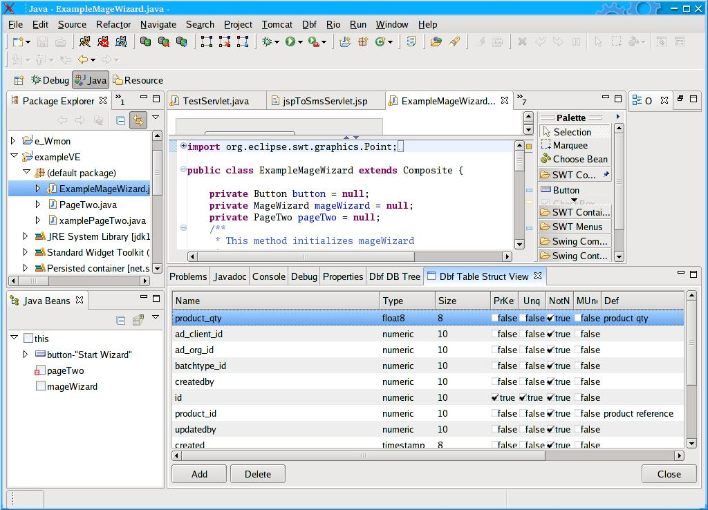
All changes will be lost when you quit. The only way to save it is to generate Torque model and then to update database
To update database you can go to Window->Preference->Dbf
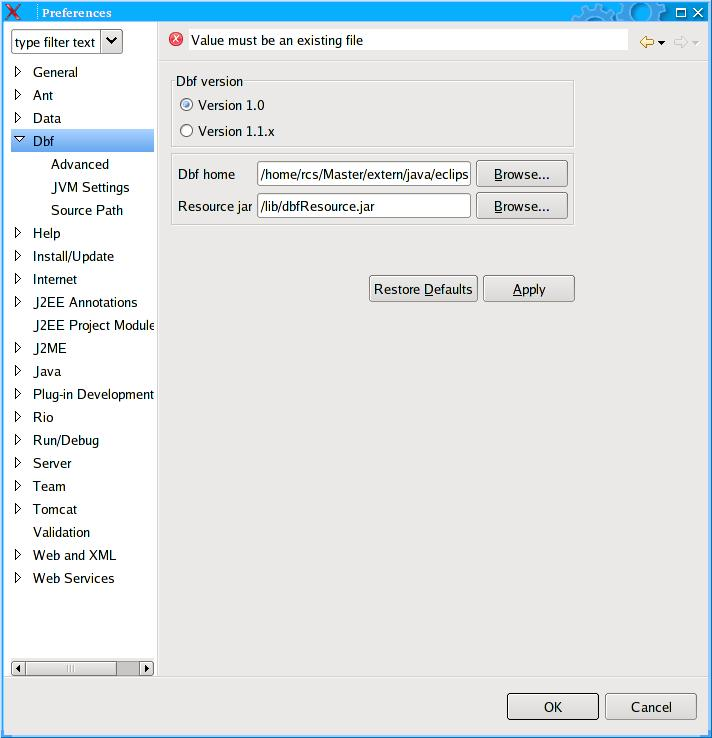
You mus now select Advanced option
And use the “create Tables from torque XML” button.
Other buttons can also help you to act on your database. Script file must be a SQL script file. This need to know what you do :
You should save you database before using all this functions.
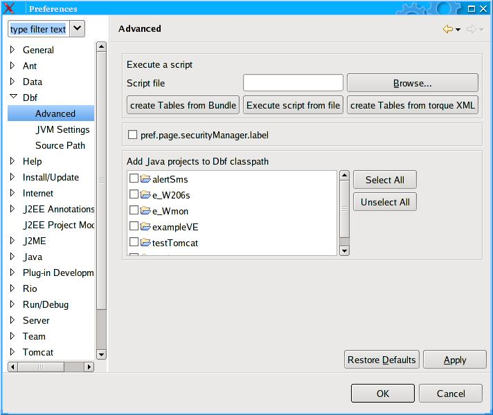